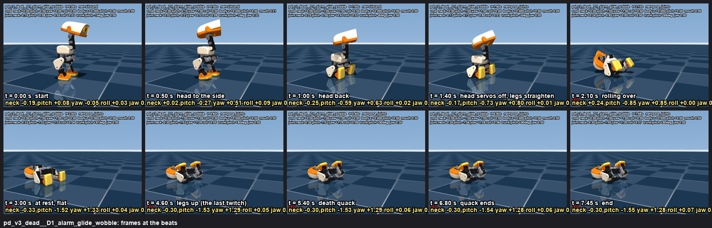
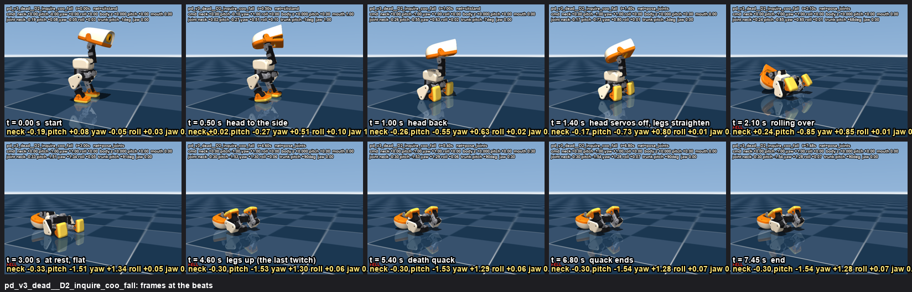
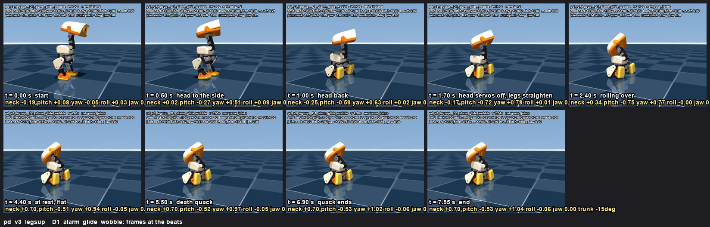
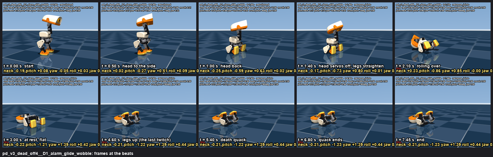

play dead (episode 3): shock, sit, keel over backwards, death quack
v3 (2026-09-06 evening, Rémi's second feedback): combination emotion = sit_toggle + a head program + robot.pose_joints (a new runtime call: the three head servos torque OFF, every other joint driven to given angles at a given gain over a ramp; no policy) twice: the legs straightened so the duck rolls onto its back, then the legs raised like a dead animal's; the jaw stays powered for the death quack; the robot HOLDS the dead pose until Rémi's Start (the full init). No relax, no re-init inside the emotion (v2's init re-posed the whole duck). Probe table (v3 rows) below, then the v2 and v1 picks for comparison.
v2 (earlier the same day): combination emotion = sit_toggle + a head program + robot.relax (torque off at once) + robot.init once the fall is over (torque on, 2 s ramp to the home pose: the head straightens, the last twitch) + the death quack with the beak open 0.3 (the runtime is being changed so the mouth works while the robot holds after an init). The head turns hard to the side (yaw 1.0) from the press, with the sit, and goes back at once, so the back of the head clears the shoulders (sim: 27 mm gap vs 23 mm with yaw 0.6). Simulation, side camera, 640x480, 30 fps. v1 (soften, head yaw 0.6 late, no torque afterwards) is kept below for comparison. Files: /Users/remi/microduck/notes/emotions/motion/playdead/ (spec.json, playdead.py, pdduck.py, probe.py, REPORT.md), sounds in sounds/playdead/.
Fall probe v3 (probe3.py, no video): head servos off + legs driven to a pose (robot.pose_joints)
Every recipe: sit at t = 0, yaw 1.0 over 0-0.5 s, head back (-1.0) over 0.4-1.0 s; at cut the head servos (neck_pitch, head_pitch, head_yaw; off4 = the roll too)
lose their torque and the legs are ramped to the pose over ramp s at gain g: zero = every leg joint at 0 (straight), seated = the seat's own angles
(hold), home = the standing pose, legsupA = hips -1.0 / knees 1.5, E = hips -0.8 / knees 1.2 / ankles 0.3, F = hips -1.3 / knees 1.5 / ankles -0.3,
two_ = zero first, then legs up once it lies there (a second call). "gap" = closest head-shell / trunk approach before / after the cut (0 after = the unpowered head rests on the trunk).
"feet z" = the ankles' height at the end (the legs up = 7-8 cm; flat = 1.9 cm).
| recipe | ends | leaves upright (s) | at rest (s) | peak trunk rot (rad/s) | peak head speed (m/s) | gap before / after (mm) | head joints at the end | feet z at the end (cm) |
|---|
| v3_zero_cut1.2_ramp0.5_g160 | ON BACK +91° | 1.64 | 2.1 | 9.64 | 1.11 | 33.0 / 0.0 | {'yaw': 1.12, 'pitch': -1.65, 'neck': -0.31, 'roll': 0.04} | [1.9, 1.9] (trunk 4.6) |
| v3_zero_cut1.2_ramp1.0_g160 | ON BACK +91° | 1.76 | 2.36 | 9.03 | 1.01 | 33.0 / 0.0 | {'yaw': 1.23, 'pitch': -1.6, 'neck': -0.31, 'roll': 0.04} | [1.9, 1.9] (trunk 4.6) |
| v3_zero_cut1.2_ramp1.5_g160 | ON BACK +91° | 1.88 | 2.72 | 8.54 | 0.95 | 33.0 / 0.0 | {'yaw': 1.27, 'pitch': -1.55, 'neck': -0.31, 'roll': 0.05} | [1.9, 1.9] (trunk 4.6) |
| v3_zero_cut1.4_ramp0.5_g160 | ON BACK +91° | 1.82 | 2.36 | 9.38 | 1.18 | 29.4 / 0.0 | {'yaw': 1.11, 'pitch': -1.65, 'neck': -0.31, 'roll': 0.04} | [1.9, 1.9] (trunk 4.6) |
| v3_zero_cut1.4_ramp1.0_g160 | ON BACK +91° | 1.96 | 2.56 | 8.82 | 0.98 | 29.4 / 0.0 | {'yaw': 1.23, 'pitch': -1.6, 'neck': -0.31, 'roll': 0.04} | [1.9, 1.9] (trunk 4.6) |
| v3_zero_cut1.4_ramp1.5_g160 | ON BACK +91° | 2.04 | 2.96 | 7.45 | 0.98 | 29.4 / 0.0 | {'yaw': 1.27, 'pitch': -1.55, 'neck': -0.31, 'roll': 0.05} | [1.9, 1.9] (trunk 4.6) |
| v3_zero_cut1.7_ramp0.5_g160 | ON BACK +91° | 2.14 | 2.68 | 9.33 | 1.17 | 29.2 / 0.0 | {'yaw': 1.12, 'pitch': -1.65, 'neck': -0.31, 'roll': 0.04} | [1.9, 1.9] (trunk 4.6) |
| v3_zero_cut1.7_ramp1.0_g160 | ON BACK +91° | 2.28 | 2.92 | 7.56 | 1.0 | 29.2 / 0.0 | {'yaw': 1.19, 'pitch': -1.6, 'neck': -0.31, 'roll': 0.04} | [1.9, 1.9] (trunk 4.6) |
| v3_zero_cut1.7_ramp1.5_g160 | ON BACK +91° | 2.36 | 3.28 | 7.96 | 0.91 | 29.2 / 0.0 | {'yaw': 1.28, 'pitch': -1.55, 'neck': -0.31, 'roll': 0.05} | [1.9, 1.9] (trunk 4.6) |
| v3_zero_cut1.4_ramp1.0_g100 | ON BACK +91° | 2.0 | 2.66 | 8.71 | 0.96 | 29.4 / 0.0 | {'yaw': 1.22, 'pitch': -1.59, 'neck': -0.31, 'roll': 0.05} | [1.9, 1.8] (trunk 4.6) |
| v3_zero_cut1.4_ramp1.0_g200 | ON BACK +91° | 1.94 | 2.54 | 8.86 | 0.99 | 29.4 / 0.0 | {'yaw': 1.23, 'pitch': -1.6, 'neck': -0.31, 'roll': 0.04} | [1.9, 1.9] (trunk 4.6) |
| v3_zero_cut1.4_ramp1.0_g160_off4 | ON BACK +91° | 1.96 | 2.54 | 8.8 | 0.98 | 29.4 / 0.0 | {'yaw': 1.37, 'pitch': -1.31, 'neck': -0.23, 'roll': 0.43} | [1.9, 1.9] (trunk 4.6) |
| v3_seated_cut1.4_ramp1.0_g160 | ON BACK +72° | 2.5 | 4.18 | 8.44 | 0.83 | 29.4 / 0.0 | {'yaw': 1.42, 'pitch': -0.56, 'neck': 0.54, 'roll': 0.03} | [6.6, 6.2] (trunk 5.6) |
| v3_home_cut1.4_ramp1.0_g160 | ON BACK +81° | 2.0 | 2.74 | 8.0 | 1.01 | 29.4 / 0.0 | {'yaw': 1.38, 'pitch': -1.05, 'neck': 0.11, 'roll': 0.04} | [2.8, 2.7] (trunk 5.2) |
| v3_legsupA_cut1.4_ramp1.0_g160 | ON BACK +90° | 2.5 | 6.06 | 8.35 | 0.91 | 29.4 / 0.0 | {'yaw': 1.35, 'pitch': -1.54, 'neck': -0.31, 'roll': 0.05} | [7.8, 7.7] (trunk 4.6) |
| v3_legsupB_cut1.4_ramp1.0_g160 | tilted +162° | 1.86 | 2.52 | 8.97 | 1.07 | 29.4 / 0.0 | {'yaw': 1.33, 'pitch': -1.39, 'neck': -1.92, 'roll': 0.03} | [2.7, 2.9] (trunk 6.9) |
| v3_legsupC_cut1.4_ramp1.0_g160 | ON BACK +81° | 2.04 | 2.48 | 8.01 | 0.91 | 29.4 / 0.0 | {'yaw': 0.93, 'pitch': -0.9, 'neck': 0.18, 'roll': 0.03} | [5.9, 9.8] (trunk 5.3) |
| v3_legsupD_cut1.4_ramp1.0_g160 | tilted +136° | 1.88 | 2.6 | 8.11 | 1.01 | 29.4 / 0.0 | {'yaw': 1.15, 'pitch': -1.92, 'neck': -1.52, 'roll': 0.09} | [2.2, 2.2] (trunk 5.6) |
| v3_zero_cut1.4_ramp1.0_g160_headrollhold | ON BACK +91° | 1.96 | 2.56 | 8.82 | 0.98 | 29.4 / 0.0 | {'yaw': 1.23, 'pitch': -1.6, 'neck': -0.31, 'roll': 0.03} | [1.9, 1.9] (trunk 4.6) |
| v3_legsupA_cut1.4_ramp1.5_g160 | ON BACK +69° | 2.62 | 5.4 | 8.85 | 0.84 | 29.4 / 0.0 | {'yaw': 1.41, 'pitch': -0.52, 'neck': 0.63, 'roll': 0.01} | [7.3, 7.3] (trunk 5.7) |
| v3_legsupA_cut1.7_ramp1.5_g160 | ON BACK +90° | 2.68 | 4.4 | 8.22 | 0.91 | 29.2 / 0.0 | {'yaw': 1.34, 'pitch': -1.54, 'neck': -0.31, 'roll': 0.05} | [7.8, 7.7] (trunk 4.6) |
| v3_legsupE_cut1.4_ramp1.0_g160 | ON BACK +69° | 2.58 | 3.66 | 8.24 | 0.86 | 29.4 / 0.0 | {'yaw': 1.39, 'pitch': -0.53, 'neck': 0.62, 'roll': 0.01} | [6.8, 6.8] (trunk 5.7) |
| v3_legsupF_cut1.4_ramp1.0_g160 | ON BACK +85° | 2.44 | 2.7 | 7.91 | 1.0 | 29.4 / 0.0 | {'yaw': 0.88, 'pitch': -0.85, 'neck': 0.06, 'roll': 0.05} | [5.7, 11.0] (trunk 5.1) |
| v3_two_zero1.4_then_legsupA3.2 | ON BACK +90° | 1.96 | 2.56 | 8.82 | 0.98 | 29.4 / 0.0 | {'yaw': 1.22, 'pitch': -1.6, 'neck': -0.3, 'roll': 0.05} | [7.8, 7.8] (trunk 4.6) |
| v3_two_zero1.4r1.5_then_legsupA3.6 | ON BACK +90° | 2.04 | 2.96 | 7.45 | 0.98 | 29.4 / 0.0 | {'yaw': 1.28, 'pitch': -1.55, 'neck': -0.3, 'roll': 0.07} | [7.8, 7.7] (trunk 4.6) |
| v3_two_zero1.4_then_legsupE3.2 | ON BACK +90° | 1.96 | 2.56 | 8.82 | 0.98 | 29.4 / 0.0 | {'yaw': 1.22, 'pitch': -1.6, 'neck': -0.3, 'roll': 0.05} | [7.5, 7.4] (trunk 4.6) |
Verdict: every zero-legs recipe rolls the duck flat onto its back (+90°) by 2.1-3.3 s; the slower the leg ramp the softer (1.5 s: 7.5 rad/s, vs 9.6 with 0.5 s), the gain hardly matters
(100 / 160 / 200 alike); straight to the legs-up pose is possible but the duck rocks for seconds (rest 4.4-6.1 s) and a 1.4 s cut ends propped at +69°; the seated hold tips slowly and ends propped
at +72°. Best: zero legs at 1.4 s over 1.5 s (7.45 rad/s, flat by 3.0 s), then the legs up at 3.6 s (feet 7.8 cm): the two-stage pick. The unpowered head ends folded back (pitch -1.55, yaw 1.3)
resting on the trunk; with the roll servo off too it hangs at roll 0.43.
Fall probe v2 (probe.py, no video): the head hard to the side from the press, then back; robot.relax; robot.init
Every recipe: sit at t = 0 (the seat lands by ~1 s), yaw 1.0 over 0-0.5 s, the head back (-1.0) over the stated window, then relax at the stated time
(torque off at once). "gap before cut" = closest approach between the head shell and the trunk collision meshes before the torque cut (54 mm at the home pose);
the joints at the cut are what the sit-stand net reached (yaw asked 1.0 -> 0.84). Rows with init: robot.init at that time (2 s ramp to home while
lying on the back): its peak trunk rotation and the joints at the end (the head straight = yaw 0, pitch ~0). ON BACK = the trunk's back on the floor.
| recipe | ends | leaves upright (s) | at rest (s) | peak trunk rot (rad/s) | peak head speed (m/s) | gap before cut (mm) | joints at cut | init: peak trunk rot | joints at end |
|---|
| v2_yaw1_back0.4-1.0_relax1.2 | ON BACK | 1.84 | 2.22 | 7.45 | 0.9 | 28.2 | {'yaw': 0.84, 'pitch': -0.72, 'neck': -0.14} | None | {'yaw': 1.19, 'pitch': -0.96, 'neck': 0.08} |
| v2_yaw1_back0.4-1.0_relax1.4 | ON BACK | 2.04 | 2.4 | 7.03 | 0.9 | 27.4 | {'yaw': 0.84, 'pitch': -0.73, 'neck': -0.14} | None | {'yaw': 1.21, 'pitch': -0.96, 'neck': 0.08} |
| v2_yaw1_back0.4-1.0_relax1.7 | ON BACK | 2.34 | 2.7 | 7.43 | 0.85 | 27.3 | {'yaw': 0.84, 'pitch': -0.73, 'neck': -0.14} | None | {'yaw': 1.2, 'pitch': -0.95, 'neck': 0.08} |
| v2_yaw1_back0.4-1.0_relax2.0 | ON BACK | 2.64 | 3.34 | 7.65 | 0.85 | 27.3 | {'yaw': 0.83, 'pitch': -0.73, 'neck': -0.14} | None | {'yaw': 1.23, 'pitch': -0.91, 'neck': 0.09} |
| v2_yaw1_back0.6-1.4_relax1.8 | ON BACK | 2.48 | 2.82 | 7.66 | 0.89 | 24.4 | {'yaw': 0.85, 'pitch': -0.72, 'neck': -0.08} | None | {'yaw': 1.16, 'pitch': -1.04, 'neck': 0.04} |
| v2_yaw1_back0.6-1.4_relax2.2 | ON BACK | 2.86 | 3.22 | 8.37 | 0.9 | 24.4 | {'yaw': 0.84, 'pitch': -0.73, 'neck': -0.08} | None | {'yaw': 1.21, 'pitch': -1.02, 'neck': 0.05} |
| v2_yaw0.6_back0.4-1.0_relax1.4 | ON BACK | 2.08 | 4.26 | 7.88 | 0.83 | 23.5 | {'yaw': 0.52, 'pitch': -0.75, 'neck': -0.13} | None | {'yaw': 1.16, 'pitch': -1.03, 'neck': 0.05} |
| v2_yaw1_back0.4-1.0_relax0.8 | upright | None | 0.9 | 2.24 | 0.38 | 47.8 | {'yaw': 0.65, 'pitch': -0.21, 'neck': -0.15} | None | {'yaw': 0.65, 'pitch': -0.15, 'neck': -0.07} |
| v2_yaw1_back0.4-1.0_relax1.0 | ON BACK | 1.58 | 2.14 | 8.42 | 0.9 | 36.3 | {'yaw': 0.85, 'pitch': -0.62, 'neck': -0.14} | None | {'yaw': 1.26, 'pitch': -0.92, 'neck': 0.04} |
| v2_yaw1_back0.4-1.2_pitch0.8_relax1.5 | ON BACK | 2.12 | 2.46 | 7.46 | 0.79 | 31.7 | {'yaw': 0.86, 'pitch': -0.6, 'neck': -0.1} | None | {'yaw': 1.27, 'pitch': -0.77, 'neck': 0.38} |
| v2_yaw1_back0.4-1.6_relax1.3 | ON BACK | 1.9 | 2.58 | 7.89 | 0.86 | 35.1 | {'yaw': 0.88, 'pitch': -0.53, 'neck': -0.09} | None | {'yaw': 1.3, 'pitch': -0.81, 'neck': 0.22} |
| v2_yaw1_back0.4-1.0_relax1.4_init3.0 | ON BACK | 2.04 | 4.92 | 7.03 | 0.9 | 27.4 | {'yaw': 0.84, 'pitch': -0.73, 'neck': -0.14} | 0.41 | {'yaw': 0.02, 'pitch': -0.22, 'neck': 0.19} |
| v2_yaw1_back0.4-1.0_relax1.4_init3.5 | ON BACK | 2.04 | 5.42 | 7.03 | 0.9 | 27.4 | {'yaw': 0.84, 'pitch': -0.73, 'neck': -0.14} | 0.39 | {'yaw': 0.02, 'pitch': -0.24, 'neck': 0.19} |
| v2_yaw1_back0.4-1.0_relax1.4_init4.0 | ON BACK | 2.04 | 5.9 | 7.03 | 0.9 | 27.4 | {'yaw': 0.84, 'pitch': -0.73, 'neck': -0.14} | 0.41 | {'yaw': 0.02, 'pitch': -0.28, 'neck': 0.2} |
| v1_2_sit_headback_yaw_soften | ON BACK | 2.98 | 4.28 | 6.61 | 0.82 | 23.2 | {'yaw': 0.48, 'pitch': -0.75, 'neck': -0.11} | None | {'yaw': 1.05, 'pitch': -1.33, 'neck': -0.2} |
Verdict: every v2 recipe lands on the back; relax at 1.4 s (the head just arrived back) is the softest of them (7.0 rad/s, head 0.90 m/s; v1's soften ramp gave
6.6); relax at 0.8 s (head not back yet) does not fall; the -0.8 head-back is a little gentler on the head (0.79 m/s). The init ramp on the lying duck is gentle
(trunk 0.4 rad/s, head 0.03 m/s), no roll, and it straightens the head (yaw 0.02, pitch -0.2). v1 rows (soften, rise, lean) are in REPORT.md.
The v3 pick: pd_v3_dead
v3: alarm + sit at the press while the head turns hard to the side and goes back; 1.4 s: head servos off + legs straightened over 1.5 s (gain 160): the duck rolls onto its back (tips 2.0 s, flat and still by 3.0 s, legs flat); 3.6 s: the legs come up over 1 s (hips -1.0, knees 1.5: the last twitch); death quack at 5.0 s, beak 0.3; holds the dead pose
pd_v3_dead + D1_alarm_glide_wobble v3 pick (Rémi's second feedback): no relax, no re-init. At 1.4 s robot.pose_joints: the three head servos lose their torque (the head flops back and to the side, resting on the shoulders), the legs are driven straight (zero angles, gain 160, 1.5 s ramp): the duck rolls onto its back (flat and still by 3.0 s); at 3.6 s a second pose_joints raises the legs (hips -1.0, knees 1.5: the last twitch); the death quack at 5.0 s with the beak open 0.3 (the jaw is powered); the pose is held until Start
motion: v3: alarm + sit at the press while the head turns hard to the side and goes back; 1.4 s: head servos off + legs straightened over 1.5 s (gain 160): the duck rolls onto its back (tips 2.0 s, flat and still by 3.0 s, legs flat); 3.6 s: the legs come up over 1 s (hips -1.0, knees 1.5: the last twitch); death quack at 5.0 s, beak 0.3; holds the dead pose
beats: 0.50 s head to the side · 1.00 s head back · 1.40 s head servos off, legs straighten · 2.10 s rolling over · 3.00 s at rest, flat · 4.60 s legs up (the last twitch) · 5.40 s death quack · 6.80 s quack ends
sound: the bank's alarm scream at the press, silence, then a synth death quack 260 -> 120 Hz with a 5 Hz wobble that slows and dies (-6 dB)
measured: FELL at 2.04 s · trunk drift 15.9 cm · trunk pitch -8..+91 deg ·
joints: neck -0.33, head_pitch -1.55..+0.08, |yaw| 1.34, |roll| 0.13 rad ·
jaw at the quacks [1.0, 0.3], between 0.3 · nets sitstand > pose_joints
beats sheet · keyframes json (with mouth) · silent mp4

pd_v3_dead + D2_inquire_coo_fall
motion: v3: alarm + sit at the press while the head turns hard to the side and goes back; 1.4 s: head servos off + legs straightened over 1.5 s (gain 160): the duck rolls onto its back (tips 2.0 s, flat and still by 3.0 s, legs flat); 3.6 s: the legs come up over 1 s (hips -1.0, knees 1.5: the last twitch); death quack at 5.0 s, beak 0.3; holds the dead pose
beats: 0.50 s head to the side · 1.00 s head back · 1.40 s head servos off, legs straighten · 2.10 s rolling over · 3.00 s at rest, flat · 4.60 s legs up (the last twitch) · 5.40 s death quack · 6.80 s quack ends
sound: the bank's inquire shock (as devastated), silence, then the robot's coo voice falling 230 -> 110 Hz with a dying wobble: a breathy last sigh
measured: FELL at 2.04 s · trunk drift 15.8 cm · trunk pitch -7..+91 deg ·
joints: neck -0.33, head_pitch -1.54..+0.08, |yaw| 1.35, |roll| 0.13 rad ·
jaw at the quacks [1.0, 0.3], between 0.89 · nets sitstand > pose_joints
beats sheet · keyframes json (with mouth) · silent mp4

pd_v3_flat (v3 alternative)
v3, one stage: head servos off + legs to zero at 1.4 s (1.5 s ramp), the duck rolls onto its back with the legs flat; death quack at 3.8 s; no leg raise
pd_v3_flat + D1_alarm_glide_wobble
motion: v3, one stage: head servos off + legs to zero at 1.4 s (1.5 s ramp), the duck rolls onto its back with the legs flat; death quack at 3.8 s; no leg raise
beats: 0.50 s head to the side · 1.00 s head back · 1.40 s head servos off, legs straighten · 2.10 s rolling over · 3.00 s at rest, flat · 4.20 s death quack · 5.60 s quack ends
sound: the bank's alarm scream at the press, silence, then a synth death quack 260 -> 120 Hz with a 5 Hz wobble that slows and dies (-6 dB)
measured: FELL at 2.04 s · trunk drift 15.8 cm · trunk pitch -8..+91 deg ·
joints: neck -0.33, head_pitch -1.55..+0.08, |yaw| 1.34, |roll| 0.13 rad ·
jaw at the quacks [1.0, 0.3], between 0.3 · nets sitstand > pose_joints
beats sheet · keyframes json (with mouth) · silent mp4
pd_v3_legsup (v3 alternative)
v3, legs straight to the dead pose: at 1.7 s the head servos go off and the legs go to hips -1.0 / knees 1.5 over 1.5 s; the duck rolls over and rocks for a while (still by 4.4 s); death quack at 5.1 s
pd_v3_legsup + D1_alarm_glide_wobble
motion: v3, legs straight to the dead pose: at 1.7 s the head servos go off and the legs go to hips -1.0 / knees 1.5 over 1.5 s; the duck rolls over and rocks for a while (still by 4.4 s); death quack at 5.1 s
beats: 0.50 s head to the side · 1.00 s head back · 1.70 s head servos off, legs straighten · 2.40 s rolling over · 4.40 s at rest, flat · 5.50 s death quack · 6.90 s quack ends
sound: the bank's alarm scream at the press, silence, then a synth death quack 260 -> 120 Hz with a 5 Hz wobble that slows and dies (-6 dB)
measured: no fall · trunk drift 7.3 cm · trunk pitch -15..+1 deg ·
joints: neck -0.27, head_pitch -0.87..+0.08, |yaw| 1.04, |roll| 0.13 rad ·
jaw at the quacks [1.0, 0.3], between 0.3 · nets sitstand > stand > pose_joints
beats sheet · keyframes json (with mouth) · silent mp4

pd_v3_dead_off4 (v3 alternative)
v3 pick with all FOUR head servos off (the roll too): the head hangs a little more crooked (roll joint 0.43)
pd_v3_dead_off4 + D1_alarm_glide_wobble
motion: v3 pick with all FOUR head servos off (the roll too): the head hangs a little more crooked (roll joint 0.43)
beats: 0.50 s head to the side · 1.00 s head back · 1.40 s head servos off, legs straighten · 2.10 s rolling over · 3.00 s at rest, flat · 4.60 s legs up (the last twitch) · 5.40 s death quack · 6.80 s quack ends
sound: the bank's alarm scream at the press, silence, then a synth death quack 260 -> 120 Hz with a 5 Hz wobble that slows and dies (-6 dB)
measured: FELL at 2.04 s · trunk drift 15.9 cm · trunk pitch -8..+91 deg ·
joints: neck -0.27, head_pitch -1.23..+0.08, |yaw| 1.39, |roll| 0.44 rad ·
jaw at the quacks [1.0, 0.3], between 0.3 · nets sitstand > pose_joints
beats sheet · keyframes json (with mouth) · silent mp4

v2 pick, for comparison: pd_v2_faint (relax, then init: rejected, the init re-poses the whole duck)
v2: alarm + sit at the press while the head turns hard to the side (yaw 1.0 over 0.5 s), the head goes back at once (0.4-1.0 s), robot.relax at 1.4 s: the duck keels over backwards (tips 2.0 s, still by 2.4 s), robot.init at 3.0 s (2 s ramp: the head straightens, the legs fold to home), death quack at 5.5 s with the beak open 0.3
pd_v2_faint + D1_alarm_glide_wobble v2 pick, for comparison (relax at 1.4 s, robot.init at 3.0 s: rejected, the init re-poses the whole duck)
motion: v2: alarm + sit at the press while the head turns hard to the side (yaw 1.0 over 0.5 s), the head goes back at once (0.4-1.0 s), robot.relax at 1.4 s: the duck keels over backwards (tips 2.0 s, still by 2.4 s), robot.init at 3.0 s (2 s ramp: the head straightens, the legs fold to home), death quack at 5.5 s with the beak open 0.3
beats: 0.50 s head to the side · 1.00 s head back · 1.40 s relax (torque off) · 2.00 s tipping · 2.40 s at rest · 4.00 s init ramp · 5.00 s home, held · 5.90 s death quack · 7.30 s quack ends
sound: the bank's alarm scream at the press, silence, then a synth death quack 260 -> 120 Hz with a 5 Hz wobble that slows and dies (-6 dB)
measured: FELL at 2.04 s · trunk drift 13.9 cm · trunk pitch -8..+88 deg ·
joints: neck -0.27, head_pitch -0.93..+0.08, |yaw| 1.24, |roll| 0.16 rad ·
jaw at the quacks [1.0, 0.3], between 0.3 · nets sitstand > relax > ramp > hold
beats sheet · keyframes json (with mouth) · silent mp4

pd_v2_faint + D2_inquire_coo_fall
motion: v2: alarm + sit at the press while the head turns hard to the side (yaw 1.0 over 0.5 s), the head goes back at once (0.4-1.0 s), robot.relax at 1.4 s: the duck keels over backwards (tips 2.0 s, still by 2.4 s), robot.init at 3.0 s (2 s ramp: the head straightens, the legs fold to home), death quack at 5.5 s with the beak open 0.3
beats: 0.50 s head to the side · 1.00 s head back · 1.40 s relax (torque off) · 2.00 s tipping · 2.40 s at rest · 4.00 s init ramp · 5.00 s home, held · 5.90 s death quack · 7.30 s quack ends
sound: the bank's inquire shock (as devastated), silence, then the robot's coo voice falling 230 -> 110 Hz with a dying wobble: a breathy last sigh
measured: FELL at 2.04 s · trunk drift 13.9 cm · trunk pitch -7..+89 deg ·
joints: neck -0.26, head_pitch -0.93..+0.08, |yaw| 1.24, |roll| 0.18 rad ·
jaw at the quacks [1.0, 0.3], between 0.89 · nets sitstand > relax > ramp > hold
beats sheet · keyframes json (with mouth) · silent mp4

pd_v2_faint_late (v2 alternative)
v2, a beat of suspense: same head choreography, robot.relax at 1.7 s (the head hangs back for 0.7 s before the cut), init at 3.3 s, death quack at 5.8 s
pd_v2_faint_late + D1_alarm_glide_wobble
motion: v2, a beat of suspense: same head choreography, robot.relax at 1.7 s (the head hangs back for 0.7 s before the cut), init at 3.3 s, death quack at 5.8 s
beats: 0.50 s head to the side · 1.00 s head back · 1.70 s relax (torque off) · 2.30 s tipping · 2.70 s at rest · 4.30 s init ramp · 5.30 s home, held · 6.20 s death quack · 7.60 s quack ends
sound: the bank's alarm scream at the press, silence, then a synth death quack 260 -> 120 Hz with a 5 Hz wobble that slows and dies (-6 dB)
measured: FELL at 2.34 s · trunk drift 13.8 cm · trunk pitch -8..+87 deg ·
joints: neck -0.27, head_pitch -0.92..+0.08, |yaw| 1.21, |roll| 0.14 rad ·
jaw at the quacks [1.0, 0.3], between 0.3 · nets sitstand > relax > ramp > hold
beats sheet · keyframes json (with mouth) · silent mp4

pd_v2_soft (v2 alternative)
v2, softer lever: the head goes back only to -0.8 over 0.8 s, robot.relax at 1.5 s (probe: head 0.79 m/s instead of 0.90), init at 3.1 s, death quack at 5.6 s
pd_v2_soft + D1_alarm_glide_wobble
motion: v2, softer lever: the head goes back only to -0.8 over 0.8 s, robot.relax at 1.5 s (probe: head 0.79 m/s instead of 0.90), init at 3.1 s, death quack at 5.6 s
beats: 0.50 s head to the side · 1.20 s head back · 1.50 s relax (torque off) · 2.10 s tipping · 2.50 s at rest · 4.10 s init ramp · 5.10 s home, held · 6.00 s death quack · 7.40 s quack ends
sound: the bank's alarm scream at the press, silence, then a synth death quack 260 -> 120 Hz with a 5 Hz wobble that slows and dies (-6 dB)
measured: FELL at 2.12 s · trunk drift 13.4 cm · trunk pitch -7..+76 deg ·
joints: neck -0.20, head_pitch -0.72..+0.08, |yaw| 1.27, |roll| 0.14 rad ·
jaw at the quacks [1.0, 0.3], between 0.3 · nets sitstand > relax > ramp > hold
beats sheet · keyframes json (with mouth) · silent mp4

pd_v2_slowback (v2 alternative)
v2, slower: the head turns first, then goes back over 0.8 s (0.6-1.4 s), robot.relax at 1.8 s, init at 3.4 s, death quack at 5.9 s
pd_v2_slowback + D1_alarm_glide_wobble
motion: v2, slower: the head turns first, then goes back over 0.8 s (0.6-1.4 s), robot.relax at 1.8 s, init at 3.4 s, death quack at 5.9 s
beats: 0.50 s head to the side · 1.40 s head back · 1.80 s relax (torque off) · 2.40 s tipping · 2.80 s at rest · 4.40 s init ramp · 5.40 s home, held · 6.30 s death quack · 7.70 s quack ends
sound: the bank's alarm scream at the press, silence, then a synth death quack 260 -> 120 Hz with a 5 Hz wobble that slows and dies (-6 dB)
measured: FELL at 2.46 s · trunk drift 14.1 cm · trunk pitch -6..+90 deg ·
joints: neck -0.19, head_pitch -0.98..+0.08, |yaw| 1.14, |roll| 0.14 rad ·
jaw at the quacks [1.0, 0.3], between 0.3 · nets sitstand > relax > ramp > hold
beats sheet · keyframes json (with mouth) · silent mp4

v1 pick, for comparison: pd_faint
shock (head up, sit at once), the head goes back and to the side over 1 s, soften at 2.2 s: the duck keels over backwards on its own weight as the torque dies (tips ~3.2 s, still by ~4.5 s), death quack at 4.8 s, beak barely open
pd_faint + D1_alarm_glide_wobble v1 pick, for comparison (yaw 0.6 only, late; soften; no torque afterwards)
motion: shock (head up, sit at once), the head goes back and to the side over 1 s, soften at 2.2 s: the duck keels over backwards on its own weight as the torque dies (tips ~3.2 s, still by ~4.5 s), death quack at 4.8 s, beak barely open
beats: 0.55 s shock, seat · 2.00 s head back + side · 2.20 s soften · 3.20 s torque off · 4.50 s at rest · 5.20 s death quack · 6.60 s quack ends
sound: the bank's alarm scream at the press, silence, then a synth death quack 260 -> 120 Hz with a 5 Hz wobble that slows and dies (-6 dB)
measured: FELL at 3.14 s · trunk drift 14.2 cm · trunk pitch -6..+90 deg ·
joints: neck -0.19, head_pitch -1.16..+0.08, |yaw| 1.24, |roll| 0.38 rad ·
jaw at the quacks [1.0, 0.3], between 0.3 · nets sitstand > soften > relax
beats sheet · keyframes json (with mouth) · silent mp4

pd_faint + D2_inquire_coo_fall
motion: shock (head up, sit at once), the head goes back and to the side over 1 s, soften at 2.2 s: the duck keels over backwards on its own weight as the torque dies (tips ~3.2 s, still by ~4.5 s), death quack at 4.8 s, beak barely open
beats: 0.55 s shock, seat · 2.00 s head back + side · 2.20 s soften · 3.20 s torque off · 4.50 s at rest · 5.20 s death quack · 6.60 s quack ends
sound: the bank's inquire shock (as devastated), silence, then the robot's coo voice falling 230 -> 110 Hz with a dying wobble: a breathy last sigh
measured: FELL at 3.14 s · trunk drift 14.3 cm · trunk pitch -5..+90 deg ·
joints: neck -0.20, head_pitch -1.21..+0.09, |yaw| 1.22, |roll| 0.35 rad ·
jaw at the quacks [1.0, 0.3], between 0.89 · nets sitstand > soften > relax
beats sheet · keyframes json (with mouth) · silent mp4

pd_faint + D3_alarm_wheee_tape
motion: shock (head up, sit at once), the head goes back and to the side over 1 s, soften at 2.2 s: the duck keels over backwards on its own weight as the torque dies (tips ~3.2 s, still by ~4.5 s), death quack at 4.8 s, beak barely open
beats: 0.55 s shock, seat · 2.00 s head back + side · 2.20 s soften · 3.20 s torque off · 4.50 s at rest · 5.20 s death quack · 6.60 s quack ends
sound: alarm at the press, silence, then the bank's wheee loop backwards on a slowing tape: a real-timbre fall that dies
measured: FELL at 3.14 s · trunk drift 14.2 cm · trunk pitch -6..+90 deg ·
joints: neck -0.19, head_pitch -1.16..+0.08, |yaw| 1.24, |roll| 0.38 rad ·
jaw at the quacks [1.0, 0.3], between 0.3 · nets sitstand > soften > relax
beats sheet · keyframes json (with mouth) · silent mp4

pd_faint_slow (v1 alternative)
same faint, slower: the head goes back over 1.5 s, soften at 2.8 s, more silence, death quack at 5.6 s
pd_faint_slow + D1_alarm_glide_wobble
motion: same faint, slower: the head goes back over 1.5 s, soften at 2.8 s, more silence, death quack at 5.6 s
beats: 0.55 s shock, seat · 2.50 s head back + side · 2.80 s soften · 3.80 s torque off · 5.10 s at rest · 6.00 s death quack · 7.60 s quack ends
sound: the bank's alarm scream at the press, silence, then a synth death quack 260 -> 120 Hz with a 5 Hz wobble that slows and dies (-6 dB)
measured: FELL at 3.76 s · trunk drift 14.3 cm · trunk pitch -6..+90 deg ·
joints: neck -0.20, head_pitch -1.23..+0.08, |yaw| 1.25, |roll| 0.37 rad ·
jaw at the quacks [1.0, 0.3], between 0.3 · nets sitstand > soften > relax
beats sheet · keyframes json (with mouth) · silent mp4

pd_faint_slow + D2_inquire_coo_fall
motion: same faint, slower: the head goes back over 1.5 s, soften at 2.8 s, more silence, death quack at 5.6 s
beats: 0.55 s shock, seat · 2.50 s head back + side · 2.80 s soften · 3.80 s torque off · 5.10 s at rest · 6.00 s death quack · 7.60 s quack ends
sound: the bank's inquire shock (as devastated), silence, then the robot's coo voice falling 230 -> 110 Hz with a dying wobble: a breathy last sigh
measured: FELL at 3.76 s · trunk drift 14.3 cm · trunk pitch -5..+90 deg ·
joints: neck -0.20, head_pitch -1.21..+0.09, |yaw| 1.25, |roll| 0.38 rad ·
jaw at the quacks [1.0, 0.3], between 0.89 · nets sitstand > soften > relax
beats sheet · keyframes json (with mouth) · silent mp4

pd_lean (v1 alternative)
shock + sit, a body-pose lean back (-0.3, seated: the net moves the neck back) with the head to the side, soften at 2.4 s; the duck tips over ~1.3 s after the torque is gone (probe: the softest fall, but a marginal balance)
pd_lean + D1_alarm_glide_wobble
motion: shock + sit, a body-pose lean back (-0.3, seated: the net moves the neck back) with the head to the side, soften at 2.4 s; the duck tips over ~1.3 s after the torque is gone (probe: the softest fall, but a marginal balance)
beats: 0.55 s shock, seat · 2.00 s lean back · 2.40 s soften · 3.40 s torque off · 4.40 s at rest · 5.40 s death quack · 6.80 s quack ends
sound: the bank's alarm scream at the press, silence, then a synth death quack 260 -> 120 Hz with a 5 Hz wobble that slows and dies (-6 dB)
measured: FELL at 3.56 s · trunk drift 12.7 cm · trunk pitch -6..+69 deg ·
joints: neck -0.19, head_pitch -0.55..+0.08, |yaw| 0.40, |roll| 0.07 rad ·
jaw at the quacks [1.0, 0.3], between 0.3 · nets sitstand > soften > relax
beats sheet · keyframes json (with mouth) · silent mp4

pd_legs (v1 alternative)
shock + sit, head to the side, then the sit-stand RISE for 0.4 s (the legs straighten) and soften: the duck goes over backwards from its heels (the brief's idea; the fastest fall in the probe)
pd_legs + D1_alarm_glide_wobble
motion: shock + sit, head to the side, then the sit-stand RISE for 0.4 s (the legs straighten) and soften: the duck goes over backwards from its heels (the brief's idea; the fastest fall in the probe)
beats: 0.55 s shock, seat · 2.20 s legs straighten · 2.40 s soften · 3.40 s torque off · 3.40 s at rest · 4.60 s death quack · 6.00 s quack ends
sound: the bank's alarm scream at the press, silence, then a synth death quack 260 -> 120 Hz with a 5 Hz wobble that slows and dies (-6 dB)
measured: FELL at 2.80 s · trunk drift 18.2 cm · trunk pitch -6..+99 deg ·
joints: neck -0.25, head_pitch -0.35..+0.29, |yaw| 1.25, |roll| 0.13 rad ·
jaw at the quacks [1.0, 0.3], between 0.3 · nets sitstand > soften > relax
beats sheet · keyframes json (with mouth) · silent mp4

{kind=link}
{kind=link}
{kind=link}
{kind=link}
{kind=link}